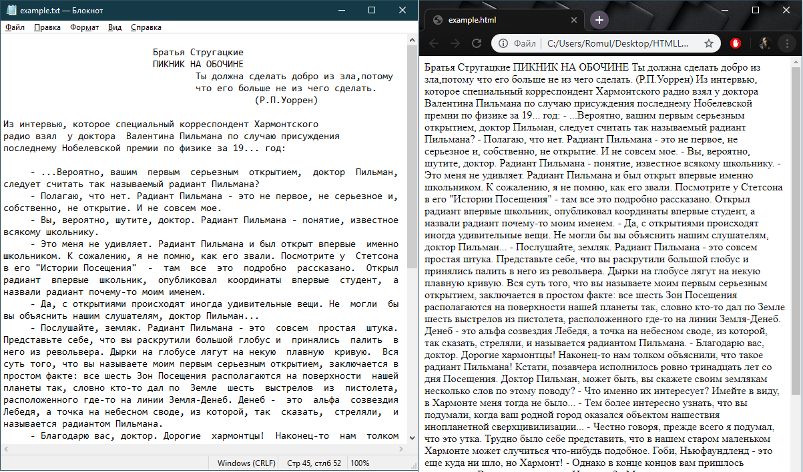

1. Основные понятия
HTML код указывает браузеру, как рендерить контент. Разметка представляет собой базовую структуру страниц. Стандарты HTML и CSS регулируются консорциумом всемирной сети.
Из названия следует, что HTML нельзя назвать языком программирования. Это язык разметки, используемый для организации данных в интернете. HTML документы состоят из HTML элементов, представленных в виде тегов. Теги записываются в угловых скобках и разделяют контент на категории.
Начальный тег (дескриптор) показывает, где начинается элемент, конечный — где заканчивается.
Закрывающий тег образуется путем добавления слэша / перед именем тега:
<имя тега>…</имя тега>. Между начальным и закрывающим тегами
находится содержимое тега — контент. Например, рассмотрим такую
строку кода HTML:
<i>Это предложение выделено курсивом.</i> А это нет.
Открывающий дескриптор <i> включает курсив, а закрывающий
дескриптор </i> отключает его. На экране эта строка документа будет
выглядеть следующим образом:
Это предложение выделено курсивом. А это - нет.
Cогласно HTML5, язык HTML является независимым от регистра символов, поэтому теги можно писать с любыми сочетаниями строчных и прописных букв: <title>, <title>, <title> — данные написания являются правильными и равнозначными.
Сами дескрипторы (теги) на экране не отображаются. Они только указывают браузеру, как отображать заключенные между ними элементы.
Ниже приведен самый простой пример документа HTML. Весь документ
заключен между дескрипторами <html></html>. Первая часть этого
документа содержится в контейнере <head></head>, в который в свою
очередь помещен контейнер <title></title>. И, наконец, тело этой
страницы находится в контейнере <body></body>.
<!DOCTYPE html> <html> <head> <meta charset="UTF-8"> <title>Простейший документ HTML</title> </head> <body> Здесь будет текст документа. </body> </html>
Рекомедуется в каждом HTML - документе использовать DOCTYPE. DOCTYPE-объявление
располагается в самом начале кода HTML-документа и необходимо для переключения браузера в
режим соответствия стандартам. Только в этом режиме можно рассчитывать на
единообразное отображение HTML-страницы в разных браузерах. Пишется он перед открывающим тегом <html> и выглядит
следующим образом: <!DOCTYPE HTML>.
Основным из всех дескрипторов, которые используются для создания
документа HTML, является дескриптор <html>. Контейнер из этих тегов указывает
на то, что в нем расположен отдельный документ HTML. Это важно,
поскольку документ HTML является простым текстовым файлом ASCII. Без
таких дескрипторов браузер или другая программа не смогут
идентифицировать формат документа и правильно интерпретировать его
содержимое.
Закрывающий дескриптор </html> так же рекомендуется ставить.
Теги могут вкладываться друг в друга, например, <p><i>Текст</i></p>.
При вложении следует соблюдать порядок их закрытия (принцип «матрёшки»), например,
следующая запись будет неверной: <p><i>Текст</p></i>.
HTML-элементы могут иметь атрибуты (
глобальные, т.е. применяемые для всех HTML-элементов, и собственные).
Атрибуты прописываются в открывающем теге элемента и содержат имя и значение, указываемые в формате
имя атрибута="значение". Атрибуты позволяют изменять свойства и поведение элемента, для которого они заданы.
2. Заголовок документа
Контейнер заголовка документа является необязательным элементом,
однако подходящее заглавие повышает эффективность документа.
Задача заголовка заключается в том, чтобы предоставить информацию
приложению, которое интерпретирует документ. За исключением элемента
title, элементы, расположенные внутри элемента head, не видны читателю
документа.
В элементе заголовка содержатся следующие сведения:
- название документа;
- определение связей между различными документами;
- указание браузеру необходимости создания формы поиска;
- метод пересылки специальных сообщений определенному браузеру или другой программе.
Дальше будет приведен пример документа HTML с элементом head.
Элемент head открывается дескриптором <head>. Обычно этот
дескриптор следует непосредственно за открывающим
дескриптором <html>. Закрывающий дескриптор </head> используется
для завершения элемента заголовка. Остальные дескрипторы элемента head
расположены внутри этого контейнера.
Элемент title является единственным обязательным элементом раздела
заголовка; он используется для присвоения названия документу.
Название обычно отображается в строке заголовка браузера. Не
следует путать title с именем файла или документа! Это просто текстовая
строка, которая совершенно не зависит от имени и расположения
файла, что делает название очень полезным, поскольку имя файла
обычно ограничено правилами операционной системы компьютера,
на котором расположен файл.
Элемент title заключен между открывающим дескриптором <title> и
закрывающим дескриптором </title>.
Текст названия является строкой неограниченной длины, в которой может содержаться любой текст (кроме некоторых специальных символов, запрещенных в HTML). Несмотря на неограниченность, рекомендуется делать название такой длины, чтобы оно помещалось в строке заголовка. Пример написания и использования показан выше.
<!DOCTYPE HTML> <html> <head> <title>Офицеры, командовавшие армией Соединенных Штатов во время Гражданской войны</title> <link href="mailto:rmeegan@ia.net" REV="made"> <base href="http://www.iа.net/~rmeegan/civil"> <meta name="Keywords" CONTENT="Янки, Главная Армия Республики, война между штатами"> <meta name="Description" CONTENT="Список офицеров, командовавших армией Соединенных Штатов во время Гражданской войны> </head> <body> </body> </html>
Тег Meta. Пример использования и определение.
Метаданные - это информация о данных документа. Пример метаданных: автор документа, время создания документа, время последней модификации, кодировка документа и т.д.
Тег <meta> позволяет задать метаданные для HTML документа. Метаданые не
отображаются на странице, но используются поисковыми системами, браузерами, и другими веб-службами.
Обратите внимание: данный элемент должен обязательно определяться в секции head.
| Атрибуты | Значение | Описание | Изменения в HTML5 |
|---|---|---|---|
| charset | кодировка | Указывает кодировку символов документа. | Добавлен |
| content | текст | Устанавливает значение для http-equiv или name. | - |
| http-equiv | content-type default-style refresh |
Определяет http заголовок, значение для которого задается атрибутом content. content-type позволяет задать кодировку документа (в HTML5 кодировка может также задаваться атрибутом charset). default-style позволяет задать предпочитаемый файл стилей. refresh позволяет задать интервал времени в секундах, через который данный документ должен обновляться. |
- |
| name | application-name author description generator keywords |
Определяет метаданные, значения для которых задаются атрибутом content. application-name указывает имя веб-приложения, которое находится на странице. author указывает имя автора документа. description указывает описание документа (может использоваться поисковыми системами при выдаче страницы в поиске). generator указывает имя программного обеспечения, которое использовалось при генерации данной страницы. keywords указывает ключевые слова страницы (используется поисковыми системами при анализе страницы) |
- |
3. Тело документа
Тег body определяет область контента страницы. Является обверткой для содержимого, отображаемого в основном окне браузера.
Текст, картинки, формы, блоки, таблицы, списки и т.д. - все это указывают внутри тега <body>.
По условиям спецификации HTML5 использовать закрывающий тег body не обязательно. Браузеры при этом
ставят </body> тег автоматически,
просчитывая его место в коде. Однако, во избежания внештатных ситуаций рекомендуется все-таки ставить
закрывающий тег body вручную в документе.
Перед закрывающим тегом <body> часто ставят подключение скриптов JavaScript.
В HTML5 тег <body> не имеет параметров или атрибутов.
Ниже в таблице приведены устаревшие атрибуты тега body.
Используйте стилизацию с помощью CSS вместо них.
| Атрибут | Описание |
|---|---|
| alink | Цвет активной ссылки (цвет ссылки при клике на нее) |
| background | Фоновая картинка страницы |
| bgcolor | Фоновый цвет страницы |
| link | Цвет непосещенных ссылок |
| text | Цвет текста на странице |
| vlink | Цвет ссылок по которым был переход (посещенных данным пользователем) |
4. Использование цветов в HTML-документе
При создании документа можно определить цвета, которые будут использованы для различных компонентов текста. Если цвета не указаны, то будут использованы цвета, принятые по умолчанию - обычно они определяются пользователем в его браузере.
Цвета в HTML указываются с помощью шестнадцатеричной системы кодирования. Эта система основана на трех компонентах - красном (Red), зеленом (Green) и синем (Blue), отсюда и ее название - RGB, по первым буквам названий этих цветов. Каждый из компонентов соответствует шестнадцатеричному числу от 00 до FF (0 и 255 в десятичной системе счисления). Эти три значения затем объединяются в одно значение, которому предшествует знак #, например #800080, что соответствует фиолетовому цвету. Кроме того, в HTML имеются 16 стандартных названий цветов, которые перечислены вместе с их шестнадцатеричными значениями в таблице 3.
| Таблица 3. Стандартные цвета и их значения | ||
| Название цвета | Шестнадцатеричное значение | Цвет |
| BLACK (Черный) | #000000 | |
| MAROON (Темно-бордовый) | #800000 | |
| GREEN (Зеленый) | #008000 | |
| oliVE (Оливковый) | #808000 | |
| NAVY (Темно-синий) | #000080 | |
| PURPLE (Фиолетовый) | #800080 | |
| TEAL (Зеленовато-голубой, электрик) | #008080 | |
| GRAY (Серый) | #808080 | |
| SILVER (Серебристый) | #C0C0C0 | |
| RED (Красный) | #FF0000 | |
| liME (Лимонный) | #00FF00 | |
| YELLOW (Желтый) | #FFFF00 | |
| BLUE (Синий) | #0000FF | |
| FUCHSIA (Фуксия) | #FF00FF | |
| AQUA (Морская волна) | #00FFFF | |
| WHITE (Белый) | #FFFFFF | |
При определении цветов для документа HTML можно использовать либо названия цветов, либо их коды. Например, следующие строки идентичны:
<body bgcolor="#FFFFFF">
<body bgcolor="WHITE">
Атрибут bgcolor служит для указания цвета фона документа в HTML4. В HTML5, чтоб задать цвет фона
или фоновый рисунок используйте тег style в контейнере head перед закрывающим тегом. ( /*...*/ - так оформляются
комментарии в CSS, а соответственно и в теге style). Лучше сразу учитесь
использовать style (подробнее в лабораторной работе №4). Выглядеть это будет так:
<!DOCTYPE HTML>
<html>
<head>
<title>Офицеры, командовавшие армией Соединенных Штатов во время Гражданской войны</title>
<style>
body {
background-image: url(images/bg.jpg); /* Задает фон в виде изображения, путь к которому указан */
/* Или */
background-color: #3366CC; /* Задает цвет фона веб-страницы */
}
</style>
</head>
При оформлении документа HTML можно использовать фоновое изображение. Фоновое изображение - это графический файл, который виден под текстом документа. С помощью такого фона можно придать целостность документу или разграничить отдельные страницы.
Обычно для фона выбирают небольшие изображения, из которых создается узор в окне просмотра - наподобие экранных обоев. Большинство из них служит только для заполнения пустого пространства в документе. Более интересно выглядят документы, которые имеют фон, соответствующий тематике страницы.
5. Теги форматирования текстового потока
Для пояснений к кодам HTML-документа можно добавить в документ комментарии, которые не будут видны читателю. Комментарий начинается дескриптором <!-- и заканчивается дескриптором -->. Все, расположенное между этими дескрипторами, не будет видно в окне браузера.
В документе HTML можно использовать тег address, в котором указываются
сведения об авторе HTML-документа.
Элемент address состоит из текста, расположенного между открывающим и
закрывающим дескрипторами <address></address>. Текст внутри
элемента address обычно отображается курсивом.
Необходимо разбивать текст на абзацы, которые выражают законченную мысль.
На рисунке 1 показано разбиение текста на абзацы в текстовом редакторе и отображение этого же текста браузером. При форматировании текста браузером пустые строки между абзацами игнорируются и весь текст сливается.

Рис. 1. Разделение абзацев в текстовом редакторе и тот же текст при просмотре браузером.
Чтобы разбить текст, необходимо использовать тег абзаца. Если
поместить открывающий тег абзаца <p> в начало каждого
нового абзаца, то программа просмотра корректно разделит текст
на абзацы. Добавление закрывающего тега </p> не обязательно,
поскольку его функции обычно выполняет следующий начальный
тег абзаца, который встретится в документе. Однако
добавление тега </p> в конце абзаца поможет обработать
документ в тех программах просмотра, которые не полностью
соответствуют стандарту HTML. Программа просмотра разделяет
абзацы, добавляя между ними строку с двойным интервалом.
Элемент абзаца имеет один атрибут align.
Возможные значения атрибута align и их назначение перечислены в
таблице 4. Если атрибут align не используется, то по умолчанию
принято выравнивание текста по левому краю.
| Таблица 4. Значения атрибута align и их назначение | |
| Значение | Назначение |
| left | Выравнивает текст по левому полю окна просмотра. Правый край неровный |
| center | Выравнивает текст по центру между полями окна просмотра |
| right | Выравнивает текст по правому краю в окне просмотра. Левый край неровный |
| justify | Выравнивает текст по ширине окна просмотра. |
Чтобы закончить строку в нужном месте, используют тег
разрыва строки <br>. Он заставит программу просмотра начать новую
строку, независимо от состояния текущей строки. В отличие от
элемента абзаца, разрыв строки не увеличивает интервал в тексте.
Элемент разрыва строки не является контейнером, у него нет
закрывающего дескриптора.
Кроме необходимости разрыва строки, бывают случаи, когда нужно
не допустить разбиения строки в определенном месте. Текст,
расположенный между открывающим дескриптором <nobr> и
соответствующим закрывающим дескриптором, не будет иметь
разрывов строк.
Запрет разрыва строк может оказаться очень нужным для таких элементов, как адреса, где неправильное разбиение строки может привести к нежелательным результатам.
Если все-таки необходимо разорвать строки
внутри элемента <nobr>, то можете указать подходящее место разрыва с
помощью дескриптора <wbr> (мягкий разрыв строки). браузер будет
использовать элемент <wbr> только в случае крайней необходимости.
Заголовки в HTML структурируют текст, составляющий тело документа.
Элемент заголовка является контейнером и должен иметь
открывающий <Hl> и закрывающий </Н1> дескрипторы. В HTML шесть
уровней заголовков: h1, h2, h3, h4, h5 и h6 (наименее
важный). Каждый из этих уровней отображается определенным образом в
браузере. Рассмотрите пример 1.
До и после заголовка предполагается обязательный разрыв абзаца.
В заголовках можно использовать атрибут align, как и в дескрипторе
<p>. Не все браузеры показывают заголовки с выравниванием по левому краю.
5.1. Горизонтальная линия
Другой способ выделения смысловых фрагментов в документе заключается в использовании горизонтальных линий. Они отчетливо показывают границы между разделами, что особенно важно для выделения различных частей документа.
Горизонтальную линию можно создать с помощью элемента <hr>.
Этот тег рисует затененную горизонтальную линию вдоль экрана
браузера. Дескриптор <hr> не является контейнером и не требует
закрывающего дескриптора. До и после горизонтальной линии
применяется обязательное разделение абзаца.
В таблице 5 перечислены атрибуты дескриптора <HR>:
| Таблица 5. Атрибуты дескриптора <HR> и их назначение | |
| Атрибут | Назначение |
| align | С помощью этого атрибута можно задать выравнивание по левому краю (left), по правому краю (right) или по центру (center) |
| WIdtH | Длину линии можно указать в пикселях или в процентном отношении к ширине окна браузера. Если используются проценты, добавьте знак процента к числу |
| SIZE | Высота линии в пикселях |
| NOSHADE | Если имеется этот атрибут, то браузер не использует эффект трехмерности |
| ColOR | Для указания цвета разделительной линии можно использовать шестнадцатеричное значение RGB или стандартное название цвета |
Горизонтальные линии следует использовать в тех случаях, когда требуется жесткое разделение текста.
5.2. Теги <pre> и <div>
Из всех тегов предварительного форматирования
наиболее эффективным и часто используемым является
контейнерный <pre>. Текст в контейнере <pre> обычно имеет
произвольную форму и пустые строки, которые служат для разрыва текста.
Внутри этого контейнера можно также использовать теги
разрыва строк и абзацев. Это позволяет создавать такие
элементы, как таблицы и ровные колонки текста. Кроме того, элемент
<pre> часто используется для отображения больших блоков
программного кода (на языке С#, С++ и других), которые было бы сложно
прочесть, если бы браузер переформатировал их.
Внутри контейнера <pre> можно использовать различные элементы
физического и логического форматирования текста. Однако использование в этом
контейнере таких элементов форматирования абзаца, как <address>
или элементы заголовка, не допускается. В контейнер <pre>
можно помещать и элементы привязки.
Спецификация HTML рекомендует, чтобы знаки табуляции не использовались в предварительно отформатированном тексте, поскольку эти знаки обрабатываются различными браузерами по-разному. Для выравнивания колонок в этом случае следует использовать пробелы.
Если внутри контейнера <pre></pre> используют символы < или
>, следует использовать заменяющие их коды < и >.
Коды некоторых специальных символов будут рассмотрены далее.
Контейнер раздела <div></div> можно использовать для
выравнивания целого блока элементов страницы. Этот
дескриптор поддерживает атрибут align, поэтому с его помощью можно,
например, выровнять по центру блок текста и графики, как в следующем
примере:
<div align=center> <Н1>Этот заголовок выравнивается по центру. </Н1> <img SRC="somepic.gif"><BR> Так жe выравниваются рисунок, расположенный вверху, и эта строка.<br> <Р align=right>A этот текст выравнивается по правому кpaю</p> </div>
Все элементы, расположенные между дескрипторами <div> и </div>,
выравниваются в соответствии с тем, что указано в дескрипторе <div> (за
исключением элементов, для которых указано другое выравнивание).
Атрибут align может иметь значения left (По левому краю), center (По центру),
justify (По ширине) или right (По правому краю).
Чтобы правильно использовать теги HTML, необходимо соблюдать определенные правила. Здесь приводится несколько советов, которые следует иметь в виду при использовании тегов, о которых шла речь выше.
- Используйте одинаковые интервалы. Старайтесь делать интервалы между элементами одинаковыми. Убедитесь в том, что выше и ниже абзацев имеется одинаковое свободное пространство.
- Избегайте выравнивания по правому краю и по центру. Не применяйте такое выравнивание к основной части документа. Текст, выровненный по правому краю или по центру, труднее читать, чем текст, выровненный по левому краю.
- Не злоупотребляйте отступами. Отступы зависят от размера используемого вами шрифта. Больший размер шрифта требует более глубокого отступа, и наоборот.
- Используйте дескрипторы
<nobr>в комбинации с<wbr>для управления разрывами строк. Иногда требуется точно указать, где именно допускается разрыв строки. Дескриптор<nobr>запрещает разрывы строк, а<wbr>подсказывает браузеру удобное место для разрыва строки. - Не экономьте место, помещая изображения. Изображения и таблицы в документе HTML должны быть окружены пустым пространством, чтобы они зрительно выделялись из текста.
- Используйте заголовки для организации текста. Благодаря заголовкам читателям проще найти нужную им информацию.
Один из принципов HTML заключается в том, что документы должны иметь определенную логику и структуру. Это дает читателю документа максимальную свободу действий. С этой целью разработчики HTML создали большое количество элементов форматирования, которые служат для выполнения различных задач. Основное преимущество такого подхода заключается в том, что документы не привязаны к определенной платформе. Хотя на различных платформах они выглядят по-разному, их содержимое одинаково.
5.3. Элементы логического форматирования
В HTML имеются следующие элементы логического форматирования.
- <em> (от англ. emphasis) – элемент разметки 'em', сформированный данным тегом, предназначен для акцентирования внимания на фрагменте текста (обращает внимание на его важность) и отображает свое содержимое курсивом;
- <strong> – элемент разметки 'strong', сформированный данным тегом, предназначен для еще большего акцентирования текста (делает его еще более важным) и отображает свое содержимое полужирным шрифтом;
- <cite> – элемент разметки 'cite', сформированный данным тегом, предназначен для выделения сносок на другой материал и отображает свое содержимое курсивом;
- <code> – элемент разметки 'code', сформированный данным тегом, предназначен для выделения текста программного кода и отображает свое содержимое моноширинным шрифтом;
- <kbd> (от англ. keyboard) – элемент разметки 'kbd', сформированный данным тегом, предназначен для выделения текста, который должен быть введен с клавиатуры или используется для названия клавиш клавиатуры; элемент отображает свое содержимое моноширинным шрифтом;
- <var> (от англ. variable) – элемент разметки 'var', сформированный данным тегом, предназначен для выделения переменных компьютерных программ и отображает свое содержимое курсивом;
- <samp> (от англ. sample) – элемент разметки 'samp', сформированный данным тегом, предназначен для выделения текста, который является результатом вывода компьютерной программы, и отображает свое содержимое моноширинным шрифтом;
- <dfn> (от англ. definition) – элемент разметки 'dfn', сформированный данным тегом, предназначен для выделения терминов, которые встречаются в тексте впервые, и отображает свое содержимое курсивом;
- <abbr> (от англ. abbreviation) – элемент разметки 'abbr', сформированный данным тегом, предназначен для выделения аббревиатур и обычно используется с атрибутом title, содержащим расшифровку аббревиатуры; текст данного элемента браузерами никак не выделяется, сохраняя исходное форматирование;
-
<q> (от англ. quote)
– элемент разметки 'q', сформированный данным тегом,
предназначен для выделения в тексте небольших цитат и отображает свое содержимое
в кавычках
; - <ins> (от англ. inserted) – элемент разметки 'ins', сформированный данным тегом, предназначен для выделения текста, который был добавлен в новую версию документа, и отображает свое содержимое подчеркнутым;
-
<del> (от англ. deleted)
– элемент разметки 'del', сформированный данным тегом, предназначен для выделения текста, который был удален
в новой версии документа, и отображает свое содержимое
зачеркнутым; - <small> – элемент разметки 'small', сформированный данным тегом, предназначен для выделения текста, который можно отнести к надписям мелким шрифтом или пометкам, как, например, второстепенная информация в конце юридических документов об отказе от ответственности или же информации о лицензии; элемент отображает свое содержимое моноширинным шрифтом.
Все эти элементы являются контейнерами и в них обязательно следует использовать закрывающий тег.
Некоторые из этих стилей форматирования приводят к одному и тому же результату.
Иногда приходится использовать в документе длинную цитату из
другого источника. Чтобы выделить эту цитату из остального текста, в
HTML имеется элемент <blockquote>. Этот контейнер является вложенным по
отношению к элементу тела документа и может, в свою очередь,
содержать любые теги форматирования или разрыва.
Поскольку элемент <blockquote> является контейнером, то для его
завершения служит закрывающий тег </blockquote>.
В большинстве браузеров для выделения элемента <blockquote>
используется отступ от левого поля. Это может улучшить внешний вид документа.
В примере 2 показана конструкция элемента <blockquote>;.
5.4. Элементы физического форматирования
Имеются следующие элементы физического форматирования.
- <b> (от англ. bold) – элемент разметки 'b', сформированный данным тегом, отображает свое содержимое полужирным шрифтом; в HTML 5 он обозначает стилистическое усиление своего содержимого, например, ключевых слов, которые выделяются в типографике полужирным начертанием;
- <i> (от англ. italic) – элемент разметки 'i', сформированный данным тегом, отображает свое содержимое курсивом; в HTML 5 он обозначает дополнительное выделение своего содержимого, например, иностранных слов, технических терминов, вставок рукописного текста, короче того, что выделяется курсивом в типографике;
- <u> (от англ. underline) – содержимое элемента разметки 'u', сформированного данным тегом, отображается подчеркнутым; в HTML 5 он в основном используется для стилистического выделения слов с орфографическими ошибками или имен собственных в китайском языке;
-
<s> (от англ. strike out) –
содержимое элемента разметки 's', сформированного данным
тегом, отображается
зачеркнутым; в HTML 5 он используется для текста, который потерял свою актуальность, например, для старой цены продукта; - <sub> (от англ. subscript) – элемент разметки 'sub', сформированный данным тегом, отображает свое содержимое в виде нижнего индекса;
- <sup> (от англ. superscript) – элемент разметки 'sup', сформированный данным тегом, отображает свое содержимое в виде верхнего индекса.
Все перечисленные элементы формируются соответствующими парными тегами и отображаются браузерами как строчные элементы.
Ниже приводятся общие советы, которые следует иметь в виду при форматировании документов.
- Используйте в документе не более двух или трех различных гарнитур шрифта.
- Обычно для основного текста используется шрифт с засечками, например Times New Roman, а заголовки оформляются шрифтом без засечек, например Arial.
- Курсив выглядит менее назойливым, чем полужирный шрифт, который следует использовать только для выделения особо важных мест.
- Не злоупотребляйте подчеркиванием. Если длинные фрагменты текста подчеркнуты, это может запутать пользователя.
- Размер заголовков должен уменьшатся по мере убывания их значимости - это позволит читателям легче ориентироваться в документе.
5.5. Спецсимволы
В HTML существует целый список специальных символов.
Список этих простых в использовании знаков довольно длинный. В таблице 6 приведены некоторые из них. C более подробным списком вы можете ознакомиться на сайте.
| Таблица 6. Некоторые специальные символы | |
| Заменитель | Символы |
| ¢, £, ¥ | ¢, £, ¥ |
| ©, ® | ©, ® |
| ° | ° |
| ¼, ½, ¾ | ¼, ½, ¾ |
| ÷ | ÷ |
| π | π |
| ≤, ≥, <, > | ≤, ≥, <, > |
| & | & |
| † | † |
| ♠, ♣, ♥, ♦ | ♠, ♣, ♥, ♦ |
Для использования одного из этих символов в документе HTML просто указывают заменитель в одной строке с текстом, как в следующем примере:
Мне нравится хлеб & масло, а на десерт я люблю π.
& будет показан на экране как амперсант (&), а π - как
математический символ для числа π.
6. Создание списков в HTML-документах
6.1. Нумерованные списки
Список в HTML состоит из контейнера, идентифицирующего список, и
стандартного тега элементов списка (в HTML все элементы
списка используют один тег - <li>, а сами списки различаются по
своим тегам контейнеров). Упорядоченный список (ordered list),
называемый также нумерованным списком (numbered), используется для
создания последовательного ряда элементов или этапов. Когда Web-браузер
встречает тег упорядоченного списка, он нумерует
элементы списка последовательно, начиная с единицы.
Упорядоченные (или нумерованные) списки начинаются с тега
<ol>, а каждый элемент списка содержит тег <li>.
Сигналом к окончанию списка служит тег </ol>. Контейнер списка
вставляет переводы строки в начале и конце списка, поэтому не
обязательно в начале и в конце списка ставить теги абзаца
<Р> - разве что в целях внешнего эффекта.
В примере 3 показано использование контейнера списка ol.
Можно создавать вложенные упорядоченные списки. Код такого списка представлен в примере 4.
С помощью атрибутов дескриптора <ol> можно изменять форматирование и
начальное значение нумерации элементов списка. В таблице 7
перечислены атрибуты и их функции.
| Атрибут | Описание, принимаемое значение |
|---|---|
reversed |
Атрибут reversed задает отображение списка в обратном порядке (например, 9, 8, 7…). |
start |
Атрибут start задает начальное значение, от которого пойдет отсчет нумерации, например, конструкция
<ol start="10"> первому пункту присвоит порядковый номер «10». Также можно одновременно задавать тип нумерации, например, <ol type="I" start="10">. |
type |
Атрибут type задает вид маркера для использования в списке (в виде букв или цифр). Принимаемые значения:1 — значение по умолчанию, десятичная нумерация.A — нумерация списка в алфавитном порядке, заглавные буквы (A, B, C, D).a — нумерация списка в алфавитном порядке, строчные буквы (a, b, c, d).I — нумерация римскими заглавными цифрами (I, II, III, IV).i — нумерация римскими строчными цифрами (i, ii, iii, iv).
|
Изменение стиля номеров позволяет задавать различия между нумерованными списками документа. В примере 5 показано, как эти атрибуты включаются в HTML-документ.
В НТМL-спецификациях имеется атрибут тега <ol>,
называемый start. Можно прервать список, например, на элементе с
номером 7, а затем продолжить его, указав, что нумерацию в нем надо
начать с этого номера <ol start=7>. Разумеется, вместо 7 можно
подставить любой необходимый номер.
6.2. Неупорядоченные списки
В HTML поддерживаются и неупорядоченные (unordered), или маркированные (bulleted), списки, в которых не определяется структура данных и связи между элементами.
Для неупорядоченного (маркированного) списка используется контейнер
<ul>. Как и в упорядоченных списках, в маркированных списках
начало и конец списка выделяются переводами строки; в них так же
поддерживаются внутренние HTML-элементы и вложенные списки. Как и для
упорядоченных списков, для них требуется закрывающий тег.
Наличие тега </ul> сигнализирует об окончании списка.
Web-браузер поддерживает вложенные списки и автоматически
обеспечивает для них дополнительный отступ, а в
некоторых браузерах пиктограмма-маркер списка зависит от уровня
вложенности. Вид пиктограмм зависит от браузера.
В примере 6 показано использование контейнера списка <ul>.
Как и в случае дескриптора <ol>, в HTML определены атрибуты
дескриптора <ul>. Можно устанавливать маркеры в виде
окружностей, кругов или квадратов. Эти атрибуты позволяют автору в
большей степени изменять внешний вид списков.
Для изменения маркеров списка используется атрибут TYPE. Он может
принимать значения disc, square и circle. В примере 7 показано использование
этого атрибута.
Как дескриптор <ol>, так и дескриптор <ul> поддерживают
атрибут compact, который указывает браузеру, что список следует
отображать в более компактном виде.
6.3. Список определений
Список определений (definition list) является особым типом списков в HTML.
Его формат напоминает формат словаря: определяемый термин и
определение, размещенное с отступом. Такой формат особенно
удобен, если требуется создать список элементов с описанием,
наподобие каталога или списка отделов компании. Элемент <dl>
обеспечивает перевод строки в начале и конце списка. В контейнере
<dl> тегом <dt> отмечается термин, а тегом
<dd> - определение. Оба эти дескриптора относятся к
открывающим. Закрывающие теги не нужны. Обычный формат списка определений таков:
<dl> <dt>Термин <dd>Определение термина </dl>
Текст в теге <dt> должен состоять из одной строки, но если он
не помещается в окне браузера, то переносится на другую строку без
отступа. Тег <dd> отображает текст определения,
расположенный под термином с отступом в один или два пробела (это
зависит от того, как список определений интерпретируется
браузером).
В примере 8 приведен пример списка определений.
6.4. Комбинирование списков
Иногда внутри одного списка необходимо использовать вложенные списки нескольких типов. Например, необходимо вместо одного из элементов нумерованного списка вставить новый список. Вместо создания упорядоченного списка с нумерацией элементов, можно вставить маркированный список, который будет отличаться от охватывающего списка отсутствием нумерации элементов. В HTML поддерживаются любые комбинации вложенных списков. В примере 9 приведен пример комбинации списков.
В примере 9 использованы три вида списков: нумерованный список,
маркированный список и список определений. Главным списком
является нумерованный список планет. Каждый элемент списка
содержит вложенный маркированный список, состоящий из имени римского
бога, в честь которого названа планета, и ее описания. браузер
устанавливает отступ для вложенных списков. Если нужно увеличить этот
отступ, можно вложить список в дополнительный пустой список.
Например, в следующем списке:
<ol> <li> Пример списка <li>Я хочу увеличить отступ </ol> можно увеличить отступ следующим образом: <ol><ol> <li> Пример списка <li> Я хочу увеличить отступ </ol></ol>
Поскольку основное различие между списками заключается в маркерах или способе форматирования элементов, а не в различном начертании текста, комбинированные списки обычно неплохо выглядят.
В HTML-коде можно создавать маркеры для списков. Рассмотрим HTML-код, представленный в примере 10.
Теги <ul> и </ul> используются для форматирования
окружения и установления отступа в неупорядоченном списке. Однако
теги <li> не используются, поскольку стандартные маркеры не
нужны. Вместо этого каждый элемент списка определяется
приблизительно таким образом:
<img SRC="cube.gif" align=ТОР> Красный <br>
Тег <img> используется для определения и выравнивания
изображения, используемого в качестве маркера, за которым
расположен элемент списка. Поскольку стандартные теги
<li> не используются, в конце каждого элемента следует
установить перевод строки с помощью дескриптора <br>.
ПРАКТИКА
Цель работы: Практическое освоение средств языка HTML для форматирования текста и списков.
Задание к лабораторной работе №1:
- Создайте местоположение для своих последующих работ. Путь из папок должен выглядеть так:
Группа / Фамилия.Имя /
- Используя теги структуры языка HTML создайте шаблон HTML-документа.
Сохраните его в Вашей папке в виде отдельного файла под именем template.html и
используйте его в дальнейшем при создании HTML-документов в лабораторных работах.
- Создайте HTML-документ по типу анкеты, заполнив её своими данными, либо аналогичный документ. Цель: показать свои умения написания HTML-кода, а именно:
- Использование заголовков различных уровней (не менее 2);
- Линия: несколько линий различной длины, цвета, размера;
- Использование логического и физического форматирования текста (не менее 3 разных);
- Применение контейнеров по типу div;
- Комбинирование различных списков (использование различных типов нумерации);
- Создание списка с измененным началом нумерации;
- Изменение фона веб-страницы (подбирайте цветовую гамму приятную для глаз).
Отчет по лабораторной работе должен содержать:
В электронном варианте представить все HTML-документы созданные в работе. Проилюстрировать преподавателю функционирование этих HTML-документов по всем пунктам задания лабораторной работы, рассказать какие теги были использованы и для чего.
Лабораторная работа №1